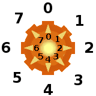

Laser
Programmiere den Roboter:
Alle Punkte müssen mit dem Laserstrahl angeschaltet werden. Laser müssen dabei über die Spiegel (dargestellt als weiße Balken) gelenkt werden.

Startprogramm
Ein Laserstrahl beleuchtet alle Stellen auf seinem Weg. Einmal erleuchtete Stellen bleiben erleuchtet.
Um einen Laserwerfer zu verwenden, muss der Roboter auf dem gleichen Feld stehen.
Die Richtung wird durch eine ganze Zahl zwischen 0 und 7 vorgegeben. Die Richtungen werden auf dem Laserwerfer angezeigt.
Weitere Hinweise:
Um einen Laserwerfer zu aktivieren kannst du die Bausteine und miteinander kombinieren, oder die Richtung direkt beim ersten Baustein eintragen.